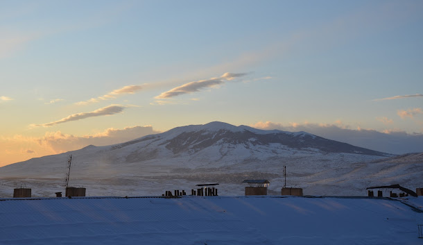

Արագածոտն
Տարածքը՝ 2753 կմ քառակուսի, բնակչությունը՝ 141 հազար մարդ։ Հայաստանի մարզերի շարքում տարածքի մեծությամբ միջին տեղ է գրավում, իսկ բնակչության թվով գերազանցում է միայն Վայոց ձորի և Տավուշի մարզերին։
Անվանում
Արագածոտնի մարզն իր անունը ժառանգել է պատմական Այրարատ աշխարհի Արագածոտն գավառի անունից։
Աշխարհագրական դիրք]
Մարզի աշխարհագրական դիրքի կարևոր առանձնահատկությունն այն է, որ գտնվում է մայրաքաղաք Երևանի և Հայաստանի ամենաբարձր լեռնագագաթի՝ Արագածի միջև։ Կիսաօղակաձև գոտևորելով Արագած լեռնազանգվածը՝ մարզի տարածքը արևմուտքում ձգվում է մինչև Թուրքիայի հետ պետական սահմանը։ Հայաստանի Արագածոտնի մարզի տարածքով են անցնում հանրապետական նշանակություն ունեցող 3 ավտոխճուղիները՝ Երևան – Աշտարակ—Թալին—Գյումրի, Երևան—Աշտարակ—Սպիտակ և Երևան—Արմավիր—Քարակերտ—Գյումրի։ Մարզի տարածքը հատում է նաև Հայաստանի գլխավոր երկաթուղին (միայն արևմտյան հատվածով և մարզի տնտեսական զարգացման վրա էական ազդեցություն չի թողնում)։
Տնտեսություն
Մարզի տնտեսության հիմքն արդյունաբերությունը և գուղատնտեսությունն են։ Արդյունաբերությունը մասնագիտացած է սննդամթերքի և ըմպելիքի, թանկարժեք իրերի արտադրության ու շինանյութերի հանքավայրերի շահագործման ուղղություններում։ Մարզի աշխարհագրական դիրքը և բնակլիմայական պայմանները նպաստավոր են ինչպես բուսաբուծության (հացահատիկ, կարտոֆիլ, բազմամյա տնկարկներ, կերային մշակաբույսեր), այնպես էլ անասնաբուծության զարգացման համար։ Գյուղատնտեսությունը հիմնականում մասնագիտացած է բուսաբուծության (մասնավորապես, հացահատիկային մշակաբույսերի արտադրության) և անասնաբուծության մեջ։ Բեռնաուղևորափոխադրումները մարզում իրականացվում են ավտոմոբիլային տրանսպորտով։
